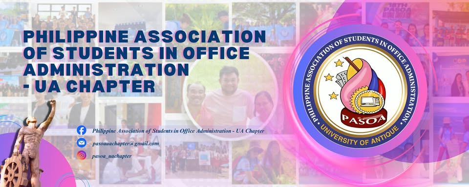

Bachelor of Science in Office Administration
Bachelor of Science in Office Administration is a program that teaches students the knowledge and skills needed to manage office work and support business operations effectively. It prepares students to work in offices, companies, schools, hospitals, government agencies, and other organizations.
Through this program, students learn office procedures, records management, business communication, computer application, scheduling, and administrative support. These skills help ensure that office operationsrun smoothly and efficiently. This program also develops professionalism, organizational skills, and attention to detail, which are essential qualities for success in administrative and office-related careers.
Importance of Office Administration
Office Administration is important because it helps an organization operate smoothly and efficiently. It involves managing records, handling communication, organiziing schedules, and supporting daily office activities. Effective office administration improves productivity, maintains order, and ensures that employess and management can perform their tasks effectively. It also helps create a professional work environment and contributes to the overall success of an organization.
Office Administration Topics
Common Office Administration topics
- Office Management
- Organizing office work
- Supervising daily operations
- Time management
- Communication Skills
- Business letters
- Email writing
- Telephone etiquette
- Public speaking
- Computer Applications
- Microsoft Word
- Excel
- PowerPoint
- Google Workspace
Career opportunities related to office Administration
- Clerk/Encoder
- Human Resource Coordinator
- Medical Executive Assistant
- Customer Service Manager
- Stenographer/Transcriber
- Bookkeeper
- Call Center Post Sales
- Customer Relations
- Customer Service Representative